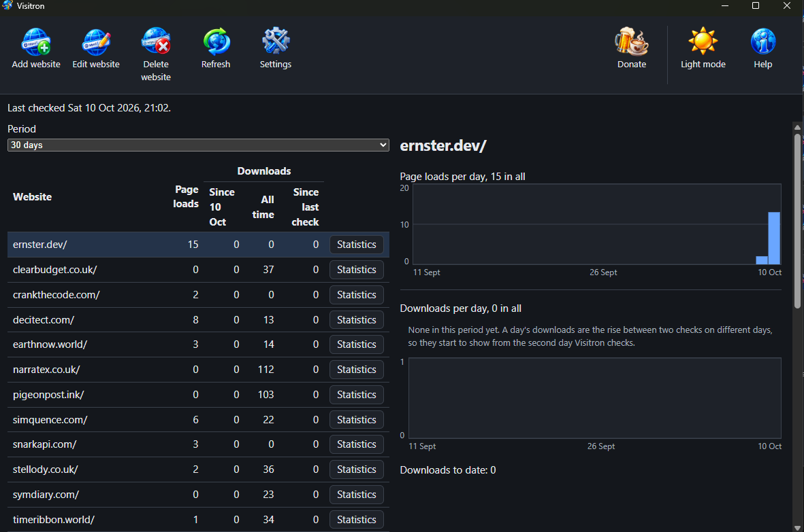

See how often your sites are read and your apps downloaded.
Visitron sits in the Windows tray and keeps a daily record for every website you run: how many people read its pages and how many times the GitHub releases it offers were downloaded. Both figures, side by side, over days, months or a year.
Free and open source for Windows. It only reads your figures; it never changes anything on GoatCounter or GitHub.

Made for people who publish
You run websites. Some of them offer an application through GitHub releases. GoatCounter counts the page loads; GitHub counts the downloads of each file. The two never meet: neither keeps a trend of downloads, neither knows which site goes with which repository. Visitron brings them together in one window, one row per website.
How it works
Add a website once. After that it looks after itself.
Add your website
Type its address. Visitron reads the site, lists the GitHub repositories it links to and ticks the likely ones. Tick the ones whose downloads belong to it; type one in by hand if the site never names it.
It checks for you
While it runs in the tray it checks every website once a day by default. Set it to check as often as every hour or as rarely as once a week. Press Refresh whenever you want the figures now.
Read the trend
Pick 7 days, 30 days, 90 days or a year. Each website shows its downloads by repository, release and platform in tables, with charts of page loads and downloads per day.
Page loads need GoatCounter. Put GoatCounter's tag on each page you want counted, then enter your GoatCounter account name and API key in Settings. The Guide in Visitron's Help menu walks you through every step.
Supporting Visitron
Visitron is free and stays free. There is no paid tier, no licence key and no feature held back behind a donation. If it saves you opening two dashboards every morning, there is a Donate button in its window; there is also one here.
Donate